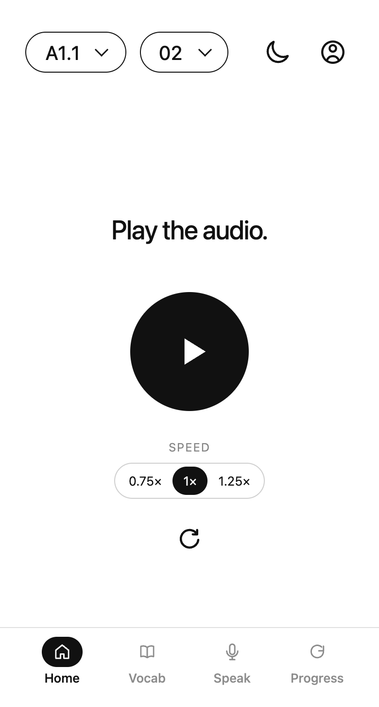
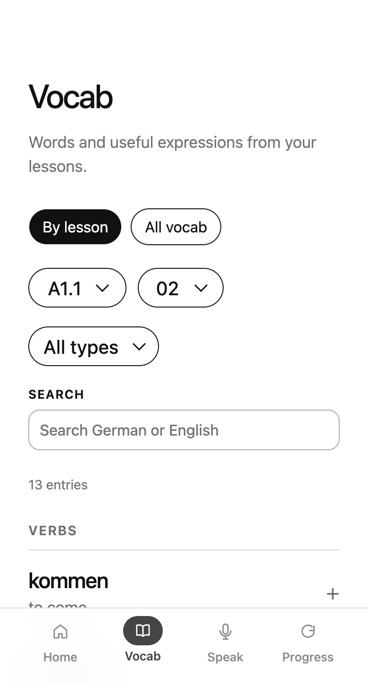
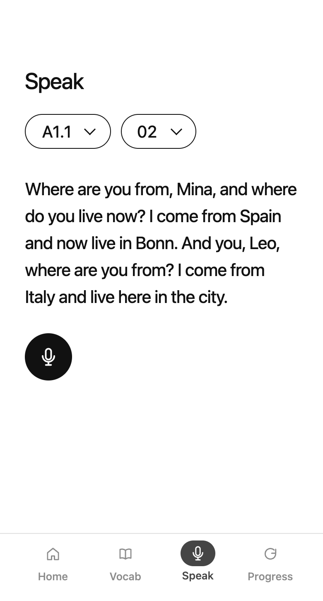

Tiger Analytics, India
Data Science
price optimisation, market analytics, demand analysis
I got tired of Duolingo's gamification so I built my own German learning app, combining listening, grammar study and speaking practice. A custom lesson compiler turns CEFR curriculum data into vocabulary breakdowns, conjugations and explanations.
I then developed a speech evaluation pipeline that combines structured LLM feedback, deterministic scoring and signal-based audio analysis. It preserves grammatical mistakes during transcription and accepts valid paraphrases, with regression tests covering omissions, grammar, transcription and pauses.



Built at a GTM hackathon, the product scans public job postings for early sales-growth signals, such as a company hiring both a sales manager and individual contributor or a founding sales/GTM hire.
I built a local visual debugger for agentic workflows that turns recorded activity into a clear, task-by-task run story.
Developers can follow tool calls, handoffs, outputs and explicitly linked evidence, then replay and compare saved recordings without rerunning the workflow.
Its focus is a lightweight recording workspace: portable JSONL files, a static browser viewer and built-in integrity and budget checks, rather than a full observability platform like Langfuse, Langsmitch, etc.
At the OpenAI Berlin Hackathon, my team built a local home-assistance prototype developed around a physical button-and-voice device. It connects the device to a medication confirmation log, spoken reminders, voice requests and a staff dashboard.
Hypencoder Reproduction & Verification
Standard search models use bi-encoder dot product mechanism to score documents for every search query, that provides a linear approach to classifying document embeddings.
The paper involves the reproduction and investigation of "Hypencoder", an information-retrieval model that uses a hyper-network to generate query-specific scoring parameters.
I have worked in data science and machine learning for about 3 years where I helped building price models for optimisation, user interface, ETL, modeling and development around analytics.
Data Science
price optimisation, market analytics, demand analysis
Data Science
conversational AI, business intelligence
Machine Learning Intern
neural architecture search, model optimisation
Data Research Intern
medical education, survey analytics
I’m Eashwar, a machine learning practitioner based in Berlin.
I work with data, math & code.
I make the most of my time building cool stuff with engineers while adapting to the fast-paced AI community in Berlin. Work aside, I spend time on making music, improv and sports, along many other things that I love to keep myself occupied with. I show passion for my work and I am always excited to share thoughts with whoever I meet.
Music - I play the piano and I also break down track samples on a DAW (Digital audio workstation) to practice mixing with different components. Trying to get better at this.